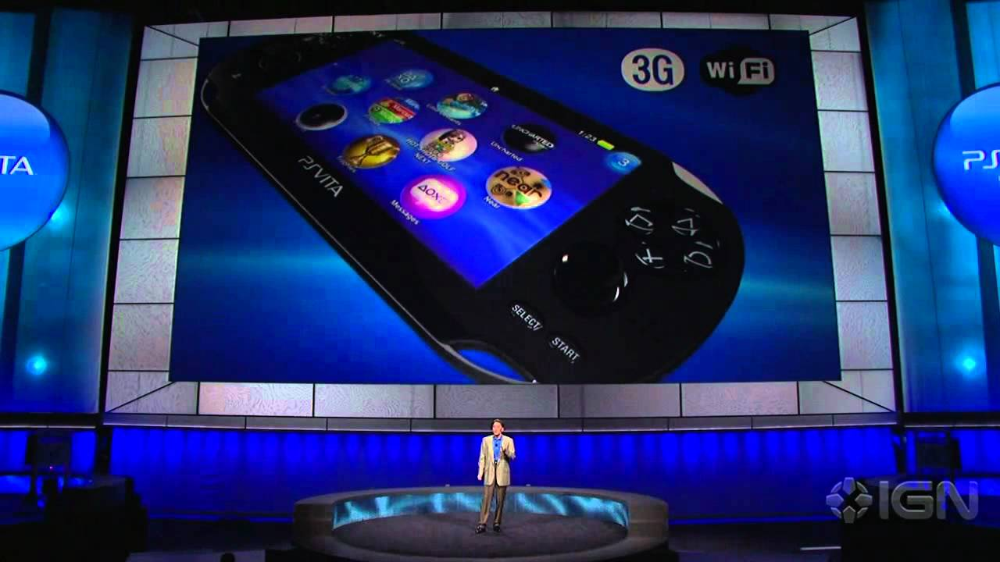
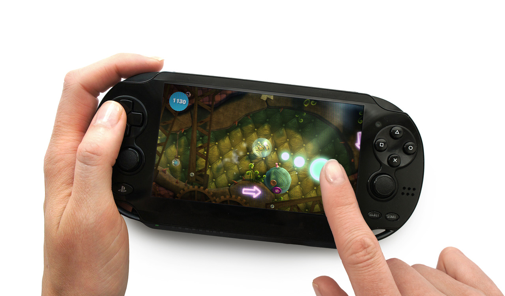

History
The PlayStation Vita(PS Vita, or Vita) is a handheld video game console developed and marketed by Sony Interactive Entertainment. It was first released in Japan on December 17, 2011, and in North America, Europe, and other international territories beginning on February 22, 2012. The console is the successor to the PlayStation Portable, and a part of the PlayStation brand of gaming devices, as part of the eighth generation of video game consoles, it primarily competed with the Nintendo 3DS.
The original model of the handheld includes a 5-inch (130 mm) OLED multi-touch capacitive touchscreen, two analog joysticks, and front and shoulder push-button input, and supports Bluetooth, Wi-Fi, and optional 3G. The Vita features a quad-core ARM Cortex-A9 MPCore CPU and a quad-core SGX543MP GPU. The PS Vita 2000 series, a revised version of the system, was released across 2013 and 2014. It has all of the same features with a slightly smaller size, extended battery life, and an LCD screen instead of OLED. Sony released the PlayStation TV, a short-lived, re-purposed version of the Vita that uses a television screen like a home video game console, discontinued at the end of 2015. As of 2022 it is Sony's last handheld console.
The Vita's design was intended to meld the experience of big-budget, dedicated video game platforms with the then up-and-coming trend of mobile gaming as seen on smart phones and tablets. However, in the year after the device's successful launch, sales of the hardware and its bigger budget games stalled, threatening to end its lifespan. A concentrated effort to attract smaller independent developers in the West, combined with strong support from mid-level Japanese companies, helped keep the platform afloat. Though this led to less diversity in its game library, it strengthened support in JRPGs, visual novels, and Western-developed indie games. This built moderate sales in Japan and a smaller yet passionate userbase in the West. Though Sony has not released exact sales figures, late-lifespan sales estimates are around 15 to 16 million units. In the platform's later years, Sony promoted the PlayStation Vita's ability to work in conjunction with its other gaming products, such as Remote Play of PlayStation 4 games, similar to the Wii U's function of Off-TV Play.
While the Vita hosted several acclaimed titles and built a small but loyal and passionate fanbase, the system is regarded as a commercial failure, with a lack of support from Sony and major third-party developers along with competition from the significantly more successful Nintendo 3DS and smart devices noted as major factors. Production of the system and physical game cards in the West ended in March 2019, with Sony having no plans for a successor.
Game library
Physical software for the Vita is distributed on a proprietary flash memory card called "PlayStation Vita game card". All Vita games are also made available to be downloaded digitally on the PlayStation Network via the PlayStation Store, although not all games are released physically. Since its launch, digital-only releases have slowly become more prominent, partially in an effort to reduce production costs for release on the platforms comparatively smaller user-base, and partially due to the influx smaller-scale indie mobile phone games that have always been digital-only releases. Like the PS3 and PS4, the Vita contains Trophy support for games.
The system was designed so that it would be easy for developers to extract PS3 game assets and in turn use them to make Vita versions of games. Prior to the Vita's release, several third-party studios showcased tech demos of the device by exporting existing assets from their PlayStation 3 counterpart and then rendering them on the device, high budget examples including Metal Gear Solid 4: Guns of the Patriots, Yakuza 4 and Lost Planet. While none of these particular high budget tech demos materialized into actual game releases, and few big-budget Western games would be made for both outside of PlayStation All-Stars Battle Royale, many Japanese development teams would go on to develop mid-level games that \ would release for both platforms, including the first two games from Falcom's Trails of Cold Steel series, Compile Hearts' original Hyperdimension Neptunia trilogy, and many entries from Tecmo Koei's Atelier and Dynasty Warriors series. The trend continued on the PS4 as well, with Vita/PS4 releases becoming common due to the spread of their userbases, Vita versions for Japan, where the Vita was larger in its initial years, and PS4 versions of games for North America and Europe, where the PS4 userbase was substantially larger. Few PlayStation 2 titles were ported to the Vita due to the PS2's complicated infrastructure, games that did, such as Final Fantasy X/X2 Remaster and Persona 4 Golden required extensive reworking, or were based on their PS3 counterparts, such as Jak and Daxter Collection, Ratchet and Clank Collection, and Sly Cooper Collection. Towards the end of its lifespan, Vita versions of games began to be cancelled, in favor of PS4 or Nintendo Switch releases.